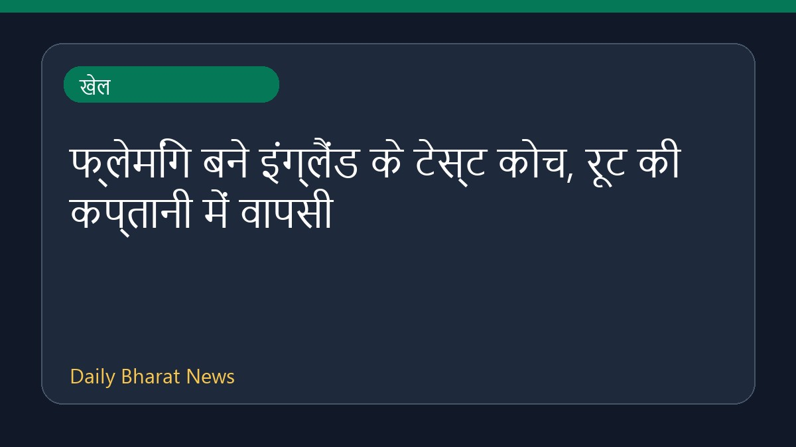

फ्लेमिंग बने इंग्लैंड के टेस्ट कोच, रूट की कप्तानी में वापसी

न्यूजीलैंड के पूर्व कप्तान और आईपीएल कोच स्टीफन फ्लेमिंग को इंग्लैंड पुरुष क्रिकेट टीम का नया टेस्ट मुख्य कोच नियुक्त किया गया है। इंग्लैंड और वेल्स क्रिकेट बोर्ड द्वारा दी गई इस महत्वपूर्ण जिम्मेदारी के साथ ही, अनुभवी बल्लेबाज जो रूट की टीम के टेस्ट कप्तान के रूप में वापसी हुई है। इस नियुक्ति से जुड़ी अन्य जानकारियां अभी सीमित हैं, लेकिन इसे इंग्लिश क्रिकेट में एक बड़ा बदलाव माना जा रहा है।
मूल स्रोत: Sports News Sources
Fleming appointed England's Test head coach; Root returns as captain - Cricbuzz ↗
Fleming appointed England's Test head coach; Root returns as captain - Cricbuzz ↗